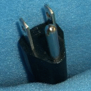
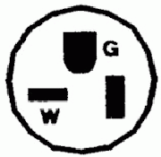
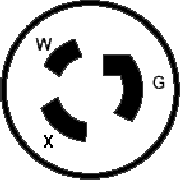
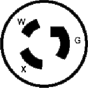
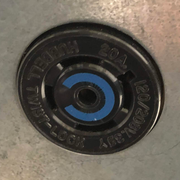
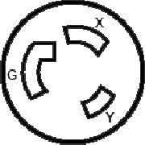
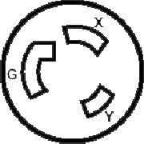
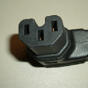
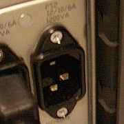
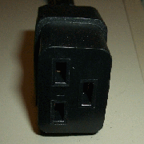

| Table 1: Most commonly used Receptacles in Data Center.
|
| (NEMA) 5-15P |
115 V, 15 AMP, Plug
Standard US 3 plunge household connector. |
 |
| (NEMA) 5-15R |
115 V, 15 AMP, Receptacle (Socket) |
|
| (NEMA) 5-20P |
115 V, 20 AMP, Plug
Variation of std US 3 plunge plug, with one "horizontal" connector |
 |
| (NEMA) 5-20R |
115 V, 20 AMP, Receptacle |
 |
| (NEMA) L5-20P |
Twist Lock, 115 V, 20 AMP, Plug |
   |
| (NEMA) L21-L20P |
Lock, 205 V, 20 AMP, Plug.
This is a 3 phase Y, 20A plug with ground in the middle pin, 4 pins on a circumference, one with a locking notch. Maybe a safer design than L6-20.
But PDU I have seen so far for them always have 5-20 outlets, never seen them with 208V capable C13 outlets, which maybe why they were phased out in favor the L6-30.
Additional ref, diagrams from customAVrack.com
|
 |
| (NEMA) L21-L20R |
Lock, 205 V, 20 AMP, Receptacle |
 |
| (NEMA) L5-20R |
Twist Lock, 115 V, 20 AMP, Receptacle |
 |
| (NEMA) L5-30 |
Twist Lock, 115 V, 30 AMP |

|
| (NEMA) L6-20P |
Twist Lock, 220 V, 20 AMP, Plug |
 |
| (NEMA) L6-20R |
Twist Lock, 220 V, 20 AMP, Receptacle |
 |
| (NEMA) L6-30P |
Lock, 220 V, 30 AMP, Plug |
 |
| (NEMA) L6-30R |
Lock, 220 V, 30 AMP, Receptacle |
   |
| Hubbell 60Amp |
60Amp 3-phase military grade connector :)
IEC 60309. These seems to be color coded, so this typle is always in blue. For data center installation this is the only pig-tail i have seen.
PIN & SLEEVE PLUG 60AMP 3Phase 250VAC 3P 4W IP67 WATERTIGHT
Should be 60A per Line (phase). 80% continuous draw - 48A. Multiply by 3 lines of 120V each, get 17.3 kVA. 17.3 kW is a common rating for rack PDU with such 60A plug, eg APC .
|


|
| Table 2: Common plug types for Servers.
|
| In IEC scheme, odd numbers are receptors, even are plugs (the ones with the pin out). In a politically incorrect mnemonics, females are odd, males are even. |
| IEC C13 (10A) vs UL/CSA C13 (15A) |
115V or 220V, 10 Amp.
Standard computer power cord. This plug connects to C14.
A power cord would have a plug on it (left picture).
A socket/receptacle version is used on the surge bars (right picture).
US use newer UL/CSA standard. Rest of world use originall IEC standard. both use the number 60320-1.
15 Amp rating per UL 498. ref:
Interpower post
|
  |
| IEC C14 |
Counterpart of C13.
Standard computer power supply AC inlet socket, or for cord in new cabinet
power distribution bar.
A cord with IEC C13 on one end and IEC C14 on the other can be plugged
in end to end and work as an extension cord. This is an international
standard server power cord, works on 115V or 220V.
The back panel of equipment would have a socket/receptacle/inlet on it
(left picture).
Whereas on a power cord, it would be called a plug (right picture).
|
  |
| IEC C15 |
Slightly diff than C13 in that it has a notch. e.g. used by HP-UX rack servers.
This one can plug into C14, but specific C16 socket require this plug connector. |
 |
| IEC C16 |
Socket for C15. |
 |
| IEC C19 |
Typically used in large servers and chassis for modular/blade server.
Rated 16A Max |
 |
| IEC C20 |
Male counterpart of C19 |
 |
| |
|
|
| |
|
|
| |
|
|
| |
|
|
| |
|
|
| |
|
|